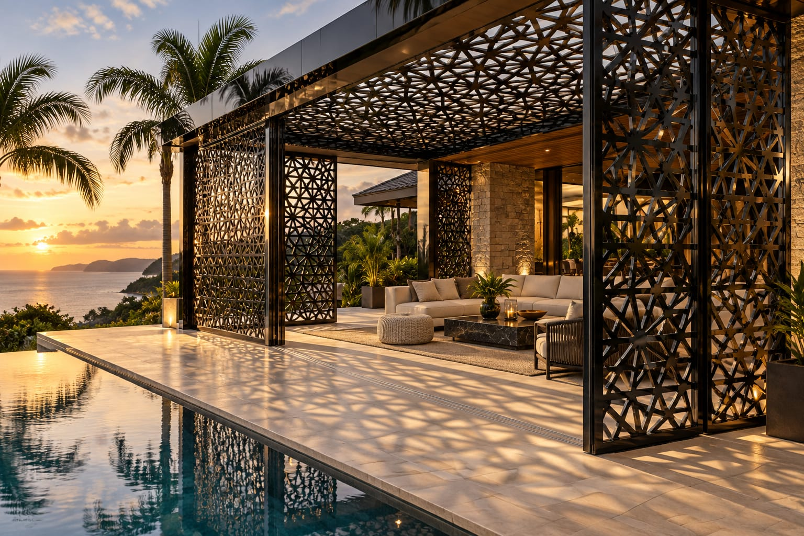
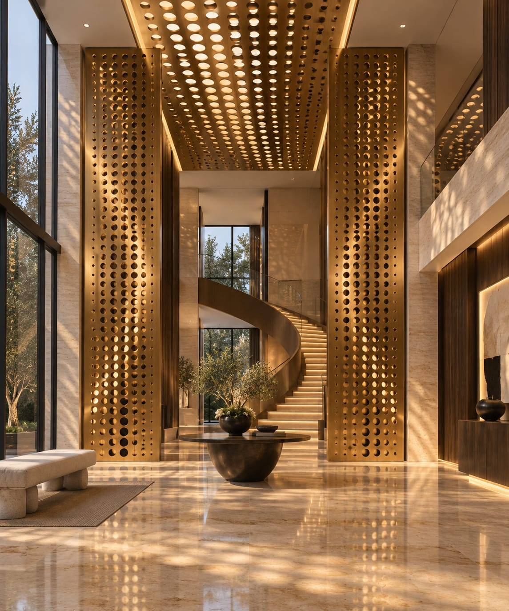
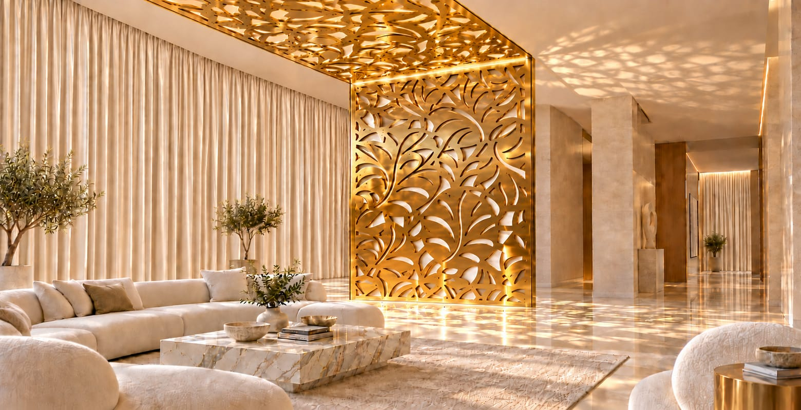
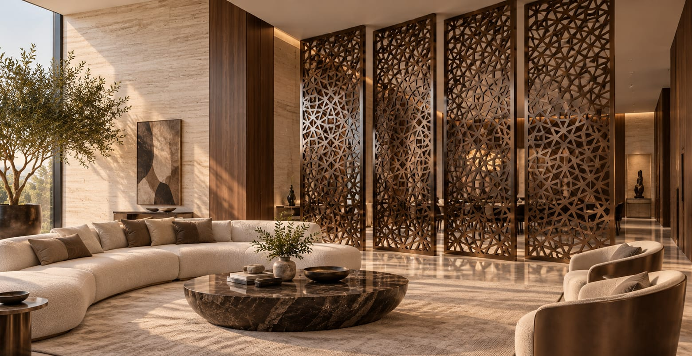
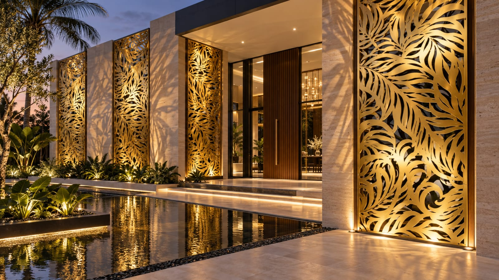
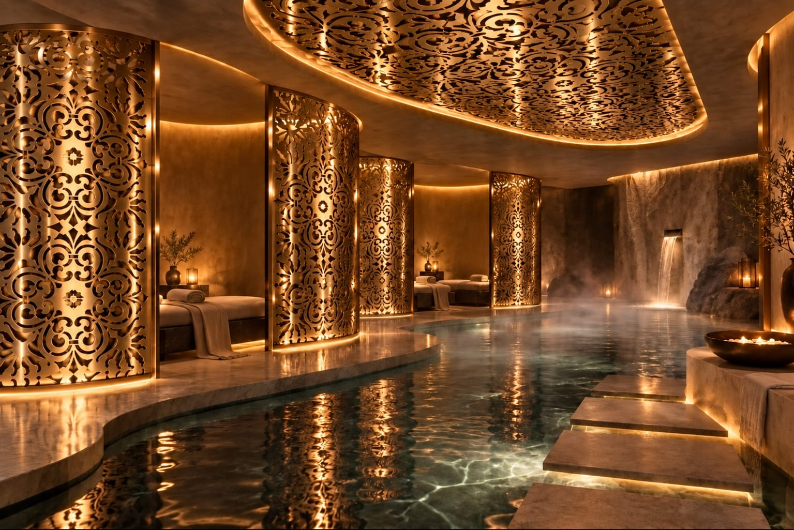
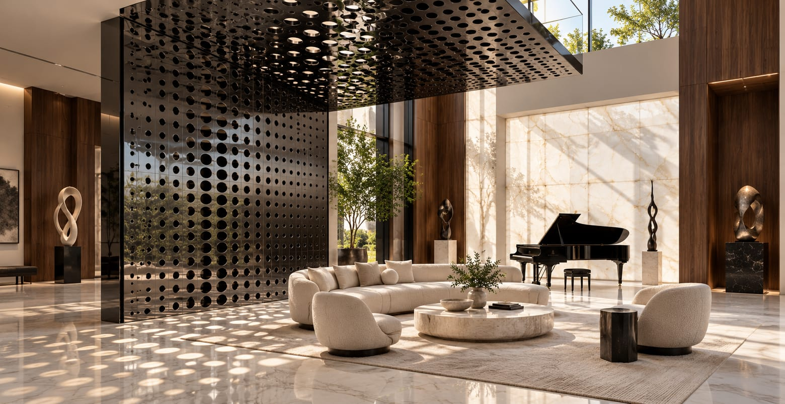
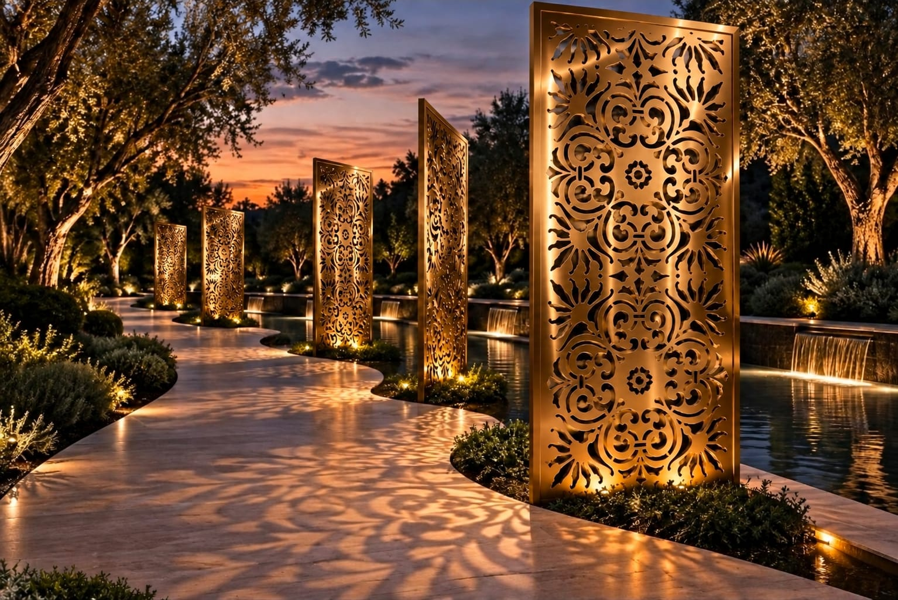

Mais do que elementos de proteção solar, os brises transformam fachadas em composições de ritmo, luz e profundidade. Em aço inox colorido, cada linha acrescenta sofisticação e identidade ao projeto.
Brises
Design que filtra a luz e revela luxo.

Os brises em aço inox colorido combinam controle solar e expressão arquitetônica, criando fachadas de presença marcante e acabamento refinado.

Em fachadas ou ambientes internos, a paginação dos brises compõe superfícies contemporâneas, equilibrando funcionalidade, leveza visual e personalidade.

Desenhos e paginações podem ser personalizados para traduzir a linguagem do projeto e criar uma composição autoral, alinhada à identidade de cada espaço.

No acabamento polido, o inox reflete a luz com brilho e imponência; no escovado, revela uma textura sutil e sofisticada. Duas expressões para diferentes propostas arquitetônicas.

A incidência da luz sobre as cores e a geometria dos brises transforma a leitura da fachada ao longo do dia, criando nuances e profundidade visual.

A cor não é pintura: resulta da nanotecnologia aplicada ao aço inox. O acabamento não descasca nem desbota, preservando a aparência do material em aplicações internas e externas.

Da definição do desenho à especificação dos acabamentos, a Inoxcolor oferece suporte técnico para integrar os brises às necessidades e à linguagem de cada projeto.

Com sete cores e dois acabamentos, os brises Inoxcolor abrem espaço para composições personalizadas. Conheça também nossa coleção de malhas e desenhos.
Explore Nossas Soluções para Arquitetura